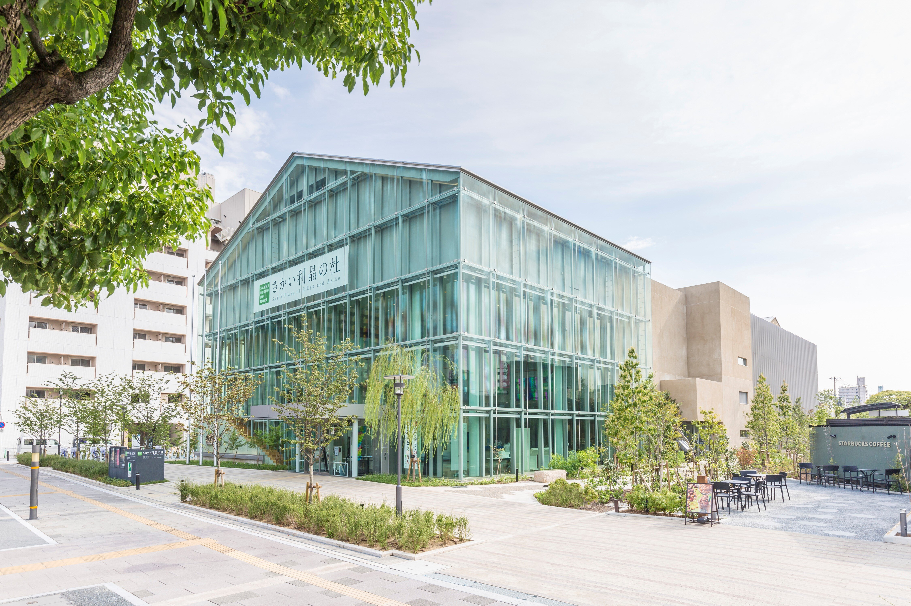
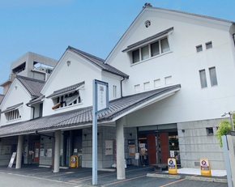
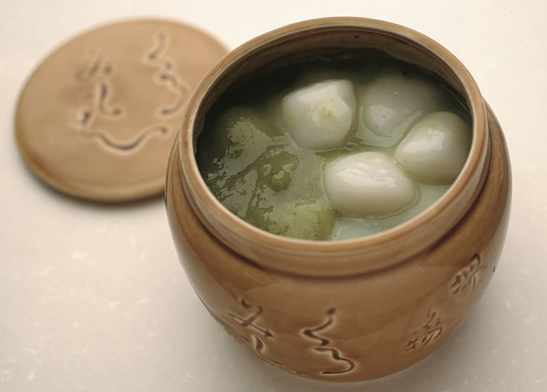
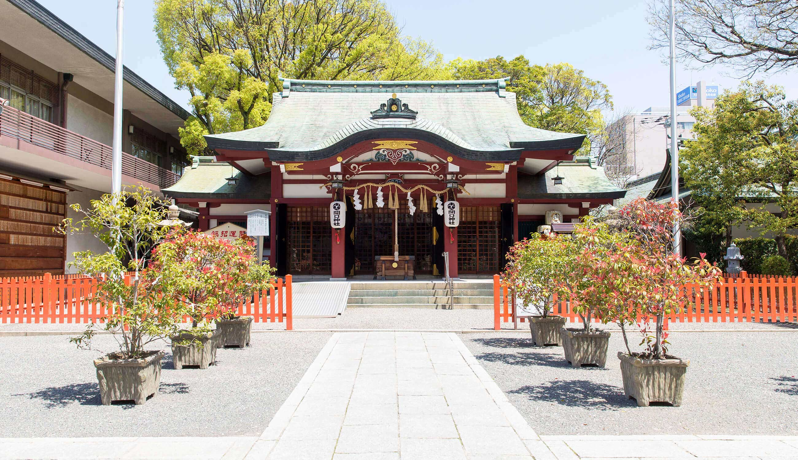
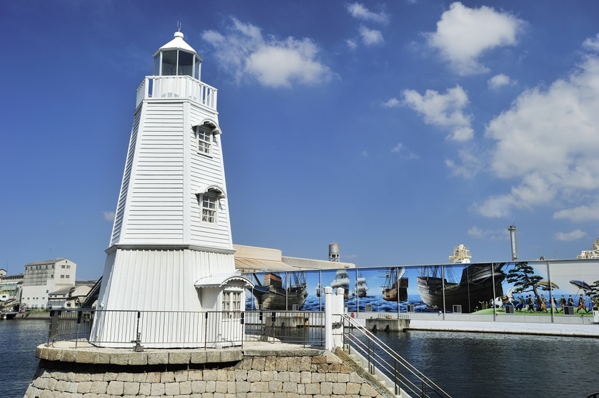

1. さかい利晶の杜
堺が生んだ茶の湯の大成者・千利休と、情熱の歌人・与謝野晶子の生涯や作品を通して、堺の歴史と文化に触れられる施設。茶の湯体験やVRなど、体験型の展示も充実しています。

2. 堺伝統産業会館
堺が誇る包丁や線香、和晒（わざらし）など、数々の伝統産業の逸品が一堂に会する施設。職人の技を間近で見学できる実演や、伝統産品の購入も楽しめます。

3. かん袋
鎌倉時代創業という、驚くべき歴史を持つ老舗和菓子店。豊臣秀吉が名付け親とされる「くるみ餅」は、緑色の餡が特徴で、一度は味わいたい堺の名物です。

4. 開口神社
「大寺さん」の愛称で親しまれる、堺の総氏神。厄除けや安産にご利益があるとされ、地元の人々の信仰を集めています。毎年9月に行われる八朔祭（はっさくさい）では、勇壮なふとん太鼓が奉納されます。

5. 旧堺燈台
明治10年に建てられた、現存する日本最古の木造洋式灯台のひとつ。かつて大阪湾を照らし続けた美しい姿は、堺のシンボルとして今も大切に保存されています。
